D
David
Williamson
About Me
Curriculum Vitae
Publications
Contact
Publications
Journal articles, conferences, other published works
All
Journal Articles
Conferences
Theses
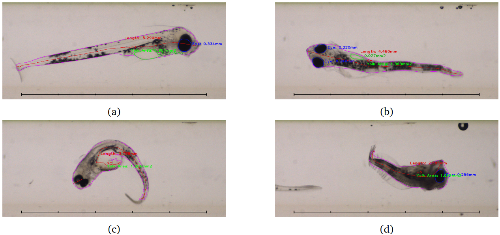
Flow-through imaging and automated analysis of oil-exposed early stage Atlantic cod (
Gadus morhua
)
Journal article, 2024
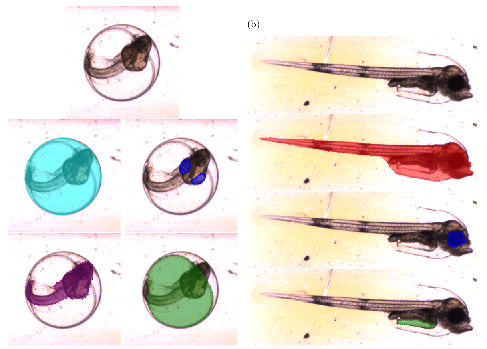
Automated monitoring of early life-stage development in Atlantic cod (
Gadus morhua
) embryos exposed to a reference toxicant
Journal article, 2024
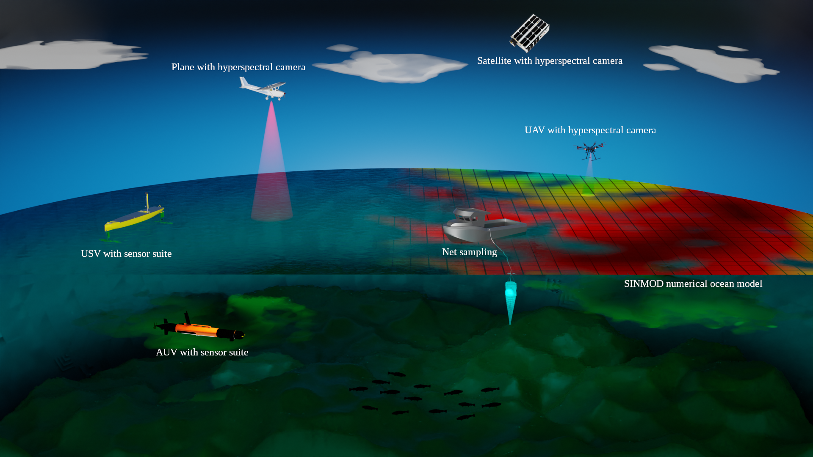
Monitoring algal blooms with complementary sensors on multiple spatial and temporal scales
Journal article, 2023
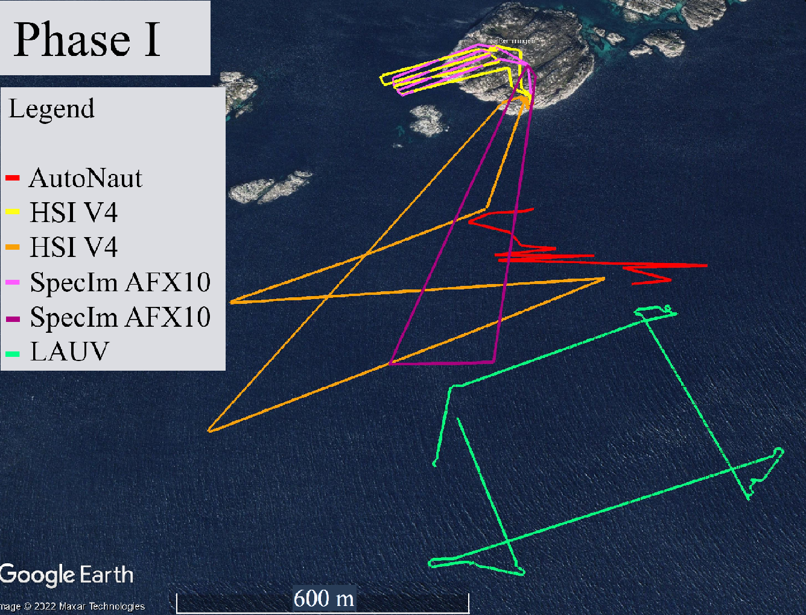
Campaign for hyperspectral data validation in North Atlantic coastal waters
Conference article, 2022
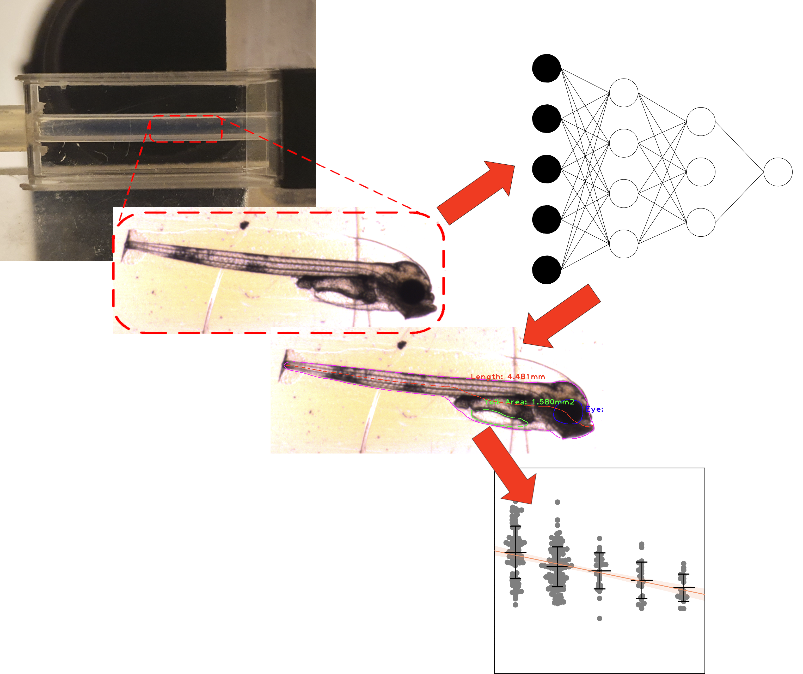
A flow-through imaging system for automated measurement of ichthyoplankton
Journal article, 2022
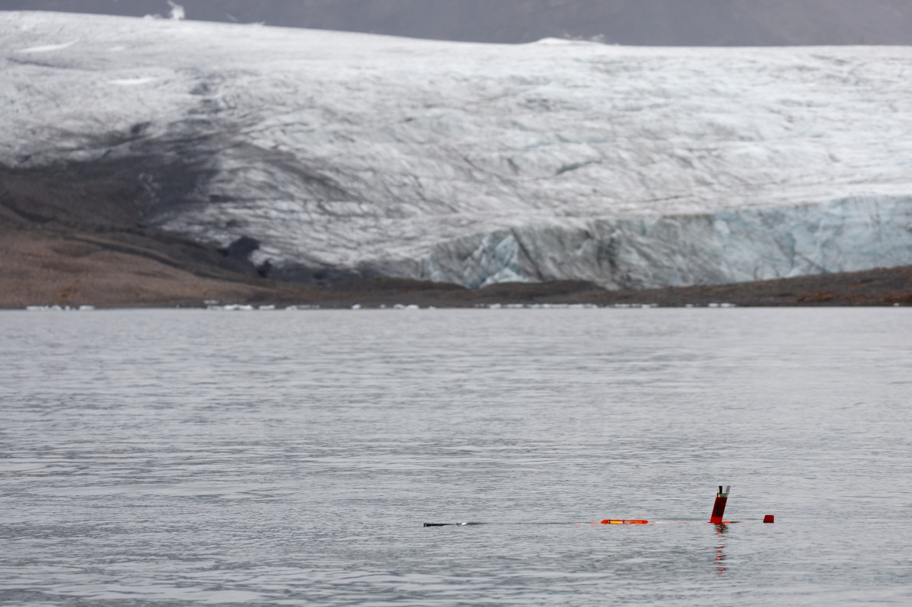
Monitoring the Arctic with Autonomous Underwater Vehicles
Conference poster, 2022
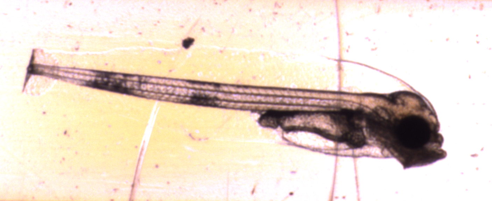
Laboratory and in-situ imaging and automated analysis of marine particles
Conference talk, 2022
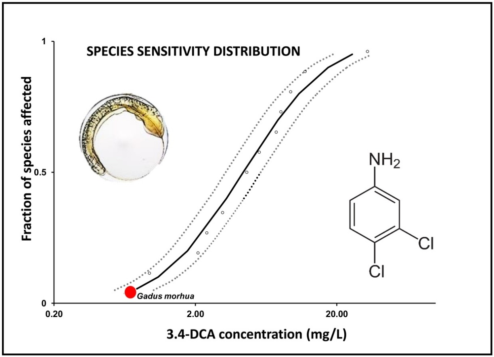
Atlantic cod (
Gadus morhua
) embryos are highly sensitive to short-term 3,4-dichloroaniline exposure
Journal article, 2021
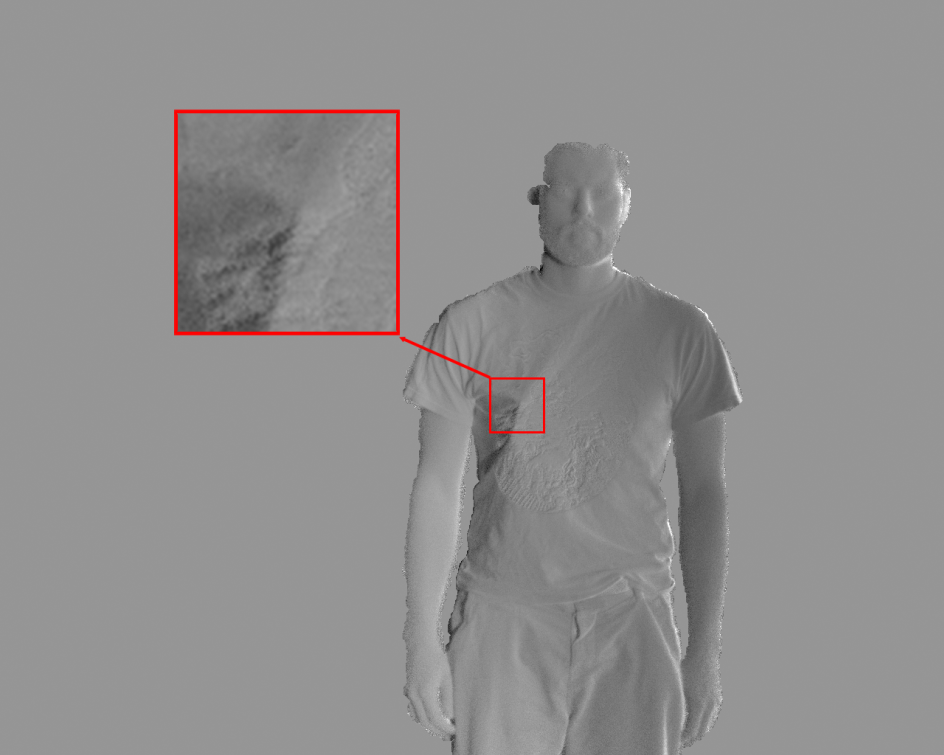
Long-range concealed object detection through active covert illumination
Conference article, 2015
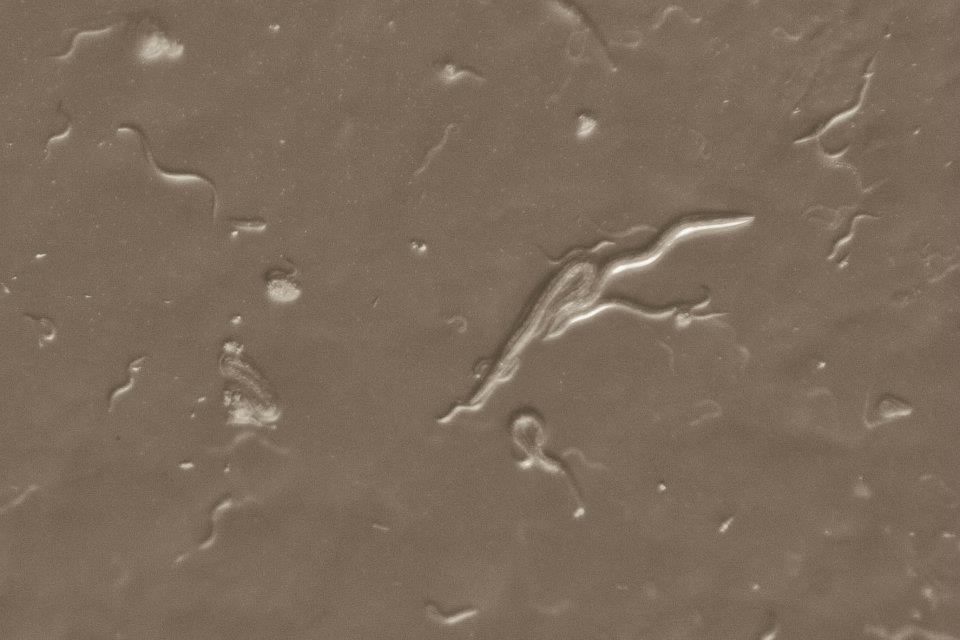
Modelling the locomotion nervous system in the nematode
C. elegans
: a developmental perspective
MSc Thesis, 2012
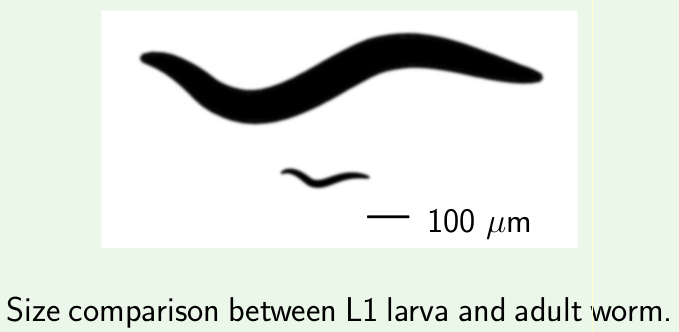
Size matters: modeling the effects of body shape on locomotive behavior in the nematode
C. elegans
Conference poster, 2012
A minimal model of
C. elegans
forward locomotion: the larval L1 circuit
Conference poster, 2011
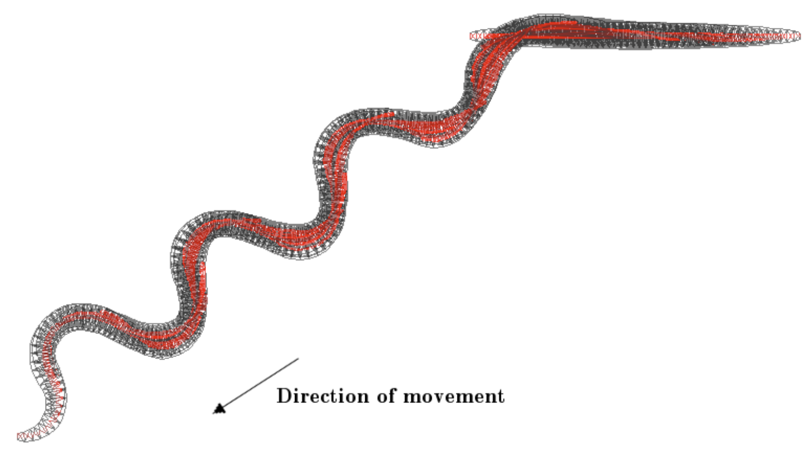
C. elegans
locomotion: a reduced model
BSc Thesis, 2011